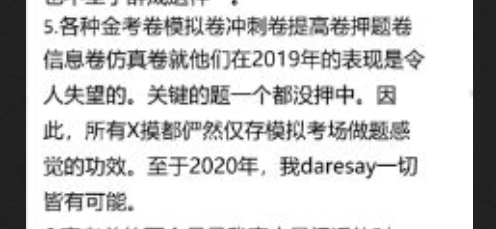
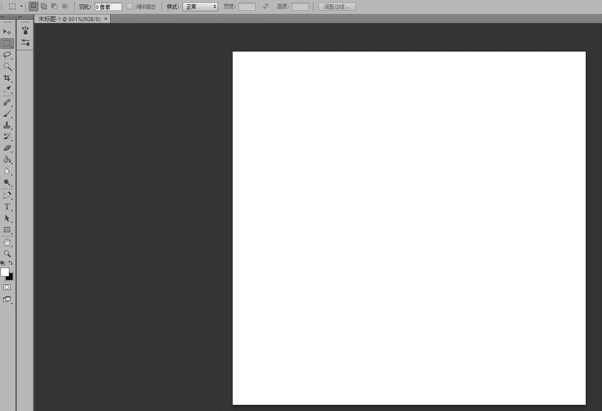

7.20
课程：
1.高考历史
1.1会考
1.2选考
1.3高考(并入全国)
1.4浙江省考试院改革失败
1.4.1英语等级赋分，前面满分
1.4.2物理出尔反尔，实打实算
1.4.3 18.4生物学考泄题
1.4.4 20.1生物学考抄选考最后一题 等等

（夸我预言带师）
1.5展望
2学校定位(高中大学)
2.1区级：余高 二高 余中、塘栖、瓶窑、实验 树兰
2.2省级：杭二、学军、镇海、乐成、金华、温州
2.3国家级
2.3.1地方偏向录取
2.3.1.1北京人大附中
2.3.1.2河北
2.3.1.3浙江浙大
2.3.2教育资源不平衡
2.3.2.1云南
2.3.2.2山东
2.3.2.3广东，学校不足
2.3.2.4浙江，江苏 冲塔二省
2.3.3民族与贫困
2.3.3.1少数民族加分 公平？
2.3.3.2筑梦计划 公平？
3高中，高考本质剖析
3.1规训
3.1.1时间，空间，封闭，座位，分数，薄弱科目，身体检查
3.1.2对待方式
3.1.3批判看待
3.1.4反智主义-美国素质教育
3.1.5肉体与灵魂，文明，等级，秩序，自由
3.2选拔
3.2.0中考是义务教育阶段第一次选拔性考试
3.2.1高考的功能就是选拔-脱胎于科举
3.2.2古代选拔制度：孝廉
3.2.3古代作弊模式：衣服，纸
3.2.4现代高考困境来源于竞争
3.2.5素质教育是否可行
3.2.6西方与现代中国高中与大学制度比较(花费，内容，成果)
3.3内卷
3.3.1清华 雷课堂
3.3.2大佬互膜，装弱；菜鸡瑟瑟发抖
4权威
4.1家长的态度
4.2领导的态度
5大学
5.1排行 清北 复交浙 浙工大浙师大杭师大宁波
任务：
「学习观」1-6，18.5
1.学习观
1.1记忆vs规律
1.1.1生物与物理化学的区别，以前的地理
1.1.2误区：文科只需要记忆
1.1.3误区：理科只需要规律
1.2扩展vs分治
1.3方法
1.3.1明确输入与输出=定义（“看书”（包括资料））
1.3.2学习=刷题（包括社会事件）
1.3.3检验=考试
1.4分数金字塔和提分金字塔<链接>
2高考的另一大作用——规训（不讲）
【我们只拿训练的部分来讲】
2.1分割与计划
2.1.1时间：规划日程表、月计划、年计划，按照时间或计划驱动。
2.1.2知识：把每道题考察的知识点与课本对应。把所有笔记都记到课本上。
2.1.3计划：把计划的每一步都落实
2.1.4能力：测验自己的能力，了解薄弱科目和优势科目，了解薄弱知识点和熟习知识点
2.2惩罚（需要自制力的）
2.2.1惩罚：对于没有完成的任务（背单词、写作业、考高分），确定相应的惩罚机制，比如增加计划量。
2.2.2奖励：对于提前、超额完成的任务，确定相应奖励（奶茶、电影等）
2.3监督（需要自制力）
2.3.1时刻反省计划，及时对计划进行调整（节假日、生病）
2.4检查
2.4.1通过考试等方式检查计划完成情况（单词有没有忘）
3对「学习观」的补充：应试教育部分
3.1学有用的知识还是没用的知识？
3.2做有用的作业还是没用的作业？（规训）
3.3考有用的试还是没用的试？
3.4考试学（不讲，高三再说）
3.4.1知识
3.4.1.1课本
3.4.1.2练习（考虑到题会简单，适当自己找点好题难题做做
3.4.1.3作业（个人反对无效作业，但取决于个人情况）（综合卷与专题卷）
3.4.1.4大学知识（洛必达法则（？听说不教？？？）、拉格朗日乘数法、极限、求导与微分（去看3Blue1Brown的视频（B站）））
3.4.1.5报纸、网络、书籍等（作文纸条、期刊）
3.4.2政策
3.4.3国家政策
3.4.4浙江政策
3.4.5学校政策
3.4.3考试
3.4.3.1考试院出卷流程
3.4.3.2考场流程
3.4.3.3题目设置（时间、难度）
3.4.3.4做题流程（时间控制、）
3.4.3.5意外处理（没墨、答题卡撕裂、题目不会）
3.4.4思维
3.4.4.1惯性思维：套路（速度，前面）
3.4.4.2批判性思维（能力，后面）
3.4.4.3惯性化的批判性思维（速度，后面）
3.4.5猜题
3.4.5.1根据答案设置猜题（本题答案、55原则）
3.4.5.2不完全数学归纳法
3.4.5.3伪证
3.4.5.4按面积给分（语文作文、数学导数）
3.4.6做题=阅读（语文）（《如何阅读一本书》）->理解（科目知识点对应）->搜索（套路，解法）->解答（计算、思考）->作答（书写）（练字！！！）
4学校
4.1教师
4.2宿舍
4.3食堂
4.4同学（重要）
4.5周边
4.6设备
数学
集合
1.定义
1.1对象
1.2分类
1.2.1全集
1.2.2空集
1.2.3既不是全集也不是空集
1.3关系
1.3.1补集
1.3.2交集
1.3.3并集
2.例子
1.4.1 PS

1.4.2 QRIZ+
1.4.3 韦恩图
1.4.4 并集=补集的交集的补集；交集=补集的并集的补集
3.应用
语文答题